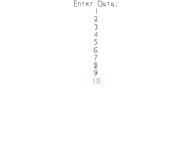

File Reading and Writing

Last Updated 4/20/14
Being able to save and load data is needed to keep data between play sessions. SDL_RWops file handling allows us to do cross platform file IO to save data.//Data points
Sint32 gData[ TOTAL_DATA ];
Here we're declaring an array of Signed integers that are 32 bits long. This will be the data we will be loading and saving. For this demo this array will be
of length 10.
//Open file for reading in binary
SDL_RWops* file = SDL_RWFromFile( "33_file_reading_and_writing/nums.bin", "r+b" );
In our media loading function we're opening the save file for reading using SDL_RWFromFile. The first argument
is the path to the file and the second argument defines how we will be opening it. "r+b" means it is being opened for reading in binary.
//File does not exist
if( file == NULL )
{
printf( "Warning: Unable to open file! SDL Error: %s\n", SDL_GetError() );
//Create file for writing
file = SDL_RWFromFile( "33_file_reading_and_writing/nums.bin", "w+b" );
Now if the file does not exist that doesn't exactly mean an error. It could mean this is the first time the program has run and the file has not been created yet. If the file does
not exist we prompt a warning and create a file by opening a file with "w+b". This will open a new file for writing in binary.
if( file != NULL )
{
printf( "New file created!\n" );
//Initialize data
for( int i = 0; i < TOTAL_DATA; ++i )
{
gData[ i ] = 0;
SDL_RWwrite( file, &gData[ i ], sizeof(Sint32), 1 );
}
//Close file handler
SDL_RWclose( file );
}
else
{
printf( "Error: Unable to create file! SDL Error: %s\n", SDL_GetError() );
success = false;
}
}
If a new file was created successfully we then start writing the initialized data to it using SDL_RWwrite. The first
argument is the file we're writing to, the second argument is the address of the objects in memory we're writing, the third argument is the number of bytes per object we're writing,
and the last one is the number of objects we're writing. After we're done writing out all the objects, we close the file for writing using
SDL_RWclose.
If the file was never created in the first place, we report an error to the console and set the success flag to false.
If the file was never created in the first place, we report an error to the console and set the success flag to false.
//File exists
else
{
//Load data
printf( "Reading file...!\n" );
for( int i = 0; i < TOTAL_DATA; ++i )
{
SDL_RWread( file, &gData[ i ], sizeof(Sint32), 1 );
}
//Close file handler
SDL_RWclose( file );
}
Now if our file loaded successfully on the first try, all we have to do is reading in the data using SDL_RWread,
which basically functions like SDL_RWwrite but in reverse.
//Initialize data textures
gDataTextures[ 0 ].loadFromRenderedText( std::to_string( (_Longlong)gData[ 0 ] ), highlightColor );
for( int i = 1; i < TOTAL_DATA; ++i )
{
gDataTextures[ i ].loadFromRenderedText( std::to_string( (_Longlong)gData[ i ] ), textColor );
}
After the file is loaded we render the text textures that correspond with each of our data numbers. Our
loadFromRenderedText function only accepts strings so we have to convert the integers to strings.
void close()
{
//Open data for writing
SDL_RWops* file = SDL_RWFromFile( "33_file_reading_and_writing/nums.bin", "w+b" );
if( file != NULL )
{
//Save data
for( int i = 0; i < TOTAL_DATA; ++i )
{
SDL_RWwrite( file, &gData[ i ], sizeof(Sint32), 1 );
}
//Close file handler
SDL_RWclose( file );
}
else
{
printf( "Error: Unable to save file! %s\n", SDL_GetError() );
}
When we close the program, we open up the file again for writing and write out all the data.
//Main loop flag
bool quit = false;
//Event handler
SDL_Event e;
//Text rendering color
SDL_Color textColor = { 0, 0, 0, 0xFF };
SDL_Color highlightColor = { 0xFF, 0, 0, 0xFF };
//Current input point
int currentData = 0;
Before we go into the main loop we declare currentData to keep track of which of our data integers we're altering. We also declare a plain text color and a highlight color for
rendering text.
else if( e.type == SDL_KEYDOWN )
{
switch( e.key.keysym.sym )
{
//Previous data entry
case SDLK_UP:
//Rerender previous entry input point
gDataTextures[ currentData ].loadFromRenderedText( std::to_string( (_Longlong)gData[ currentData ] ), textColor );
--currentData;
if( currentData < 0 )
{
currentData = TOTAL_DATA - 1;
}
//Rerender current entry input point
gDataTextures[ currentData ].loadFromRenderedText( std::to_string( (_Longlong)gData[ currentData ] ), highlightColor );
break;
//Next data entry
case SDLK_DOWN:
//Rerender previous entry input point
gDataTextures[ currentData ].loadFromRenderedText( std::to_string( (_Longlong)gData[ currentData ] ), textColor );
++currentData;
if( currentData == TOTAL_DATA )
{
currentData = 0;
}
//Rerender current entry input point
gDataTextures[ currentData ].loadFromRenderedText( std::to_string( (_Longlong)gData[ currentData ] ), highlightColor );
break;
When we press up or down we want to rerender the the old current data in plain color, move to the next data point (with some bounds checking), and rerender the new current data
in the highlight color.
//Decrement input point
case SDLK_LEFT:
--gData[ currentData ];
gDataTextures[ currentData ].loadFromRenderedText( std::to_string( (_Longlong)gData[ currentData ] ), highlightColor );
break;
//Increment input point
case SDLK_RIGHT:
++gData[ currentData ];
gDataTextures[ currentData ].loadFromRenderedText( std::to_string( (_Longlong)gData[ currentData ] ), highlightColor );
break;
}
}
When we press left or right we decrement or increment the current data and rerender the texture associated with it.
//Clear screen
SDL_SetRenderDrawColor( gRenderer, 0xFF, 0xFF, 0xFF, 0xFF );
SDL_RenderClear( gRenderer );
//Render text textures
gPromptTextTexture.render( ( SCREEN_WIDTH - gPromptTextTexture.getWidth() ) / 2, 0 );
for( int i = 0; i < TOTAL_DATA; ++i )
{
gDataTextures[ i ].render( ( SCREEN_WIDTH - gDataTextures[ i ].getWidth() ) / 2, gPromptTextTexture.getHeight() + gDataTextures[ 0 ].getHeight() * i );
}
//Update screen
SDL_RenderPresent( gRenderer );
At the end of the main loop we render all the textures to the screen.